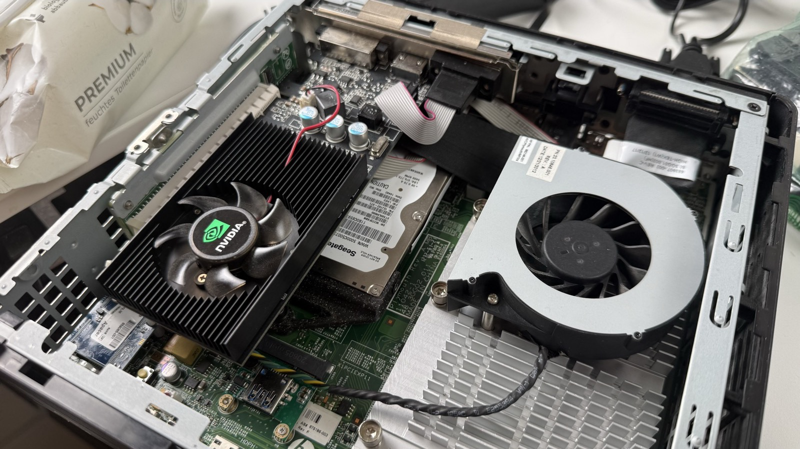
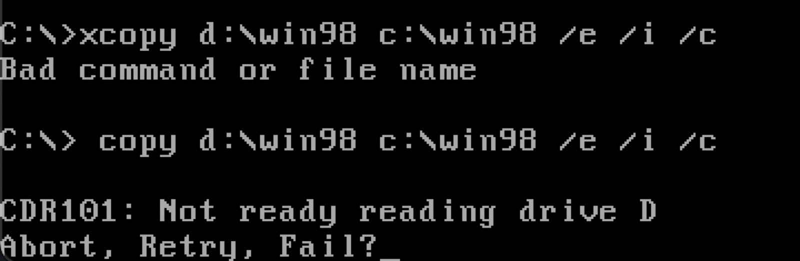
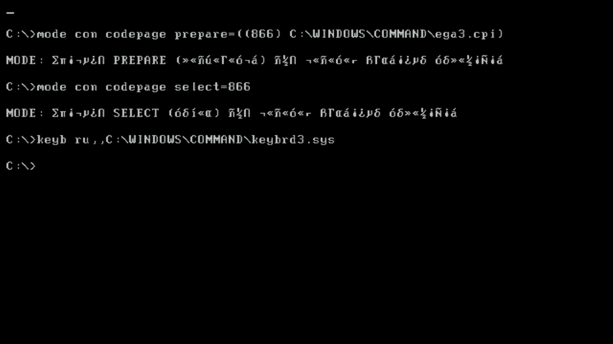
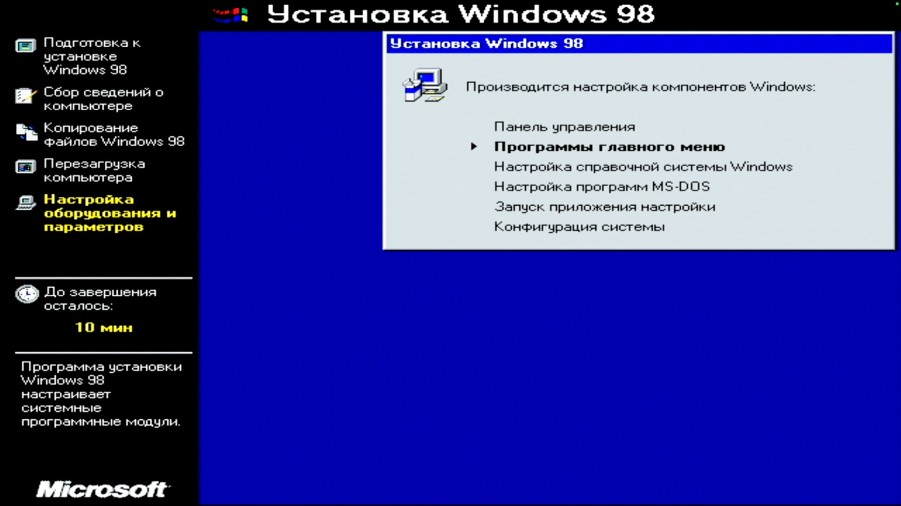
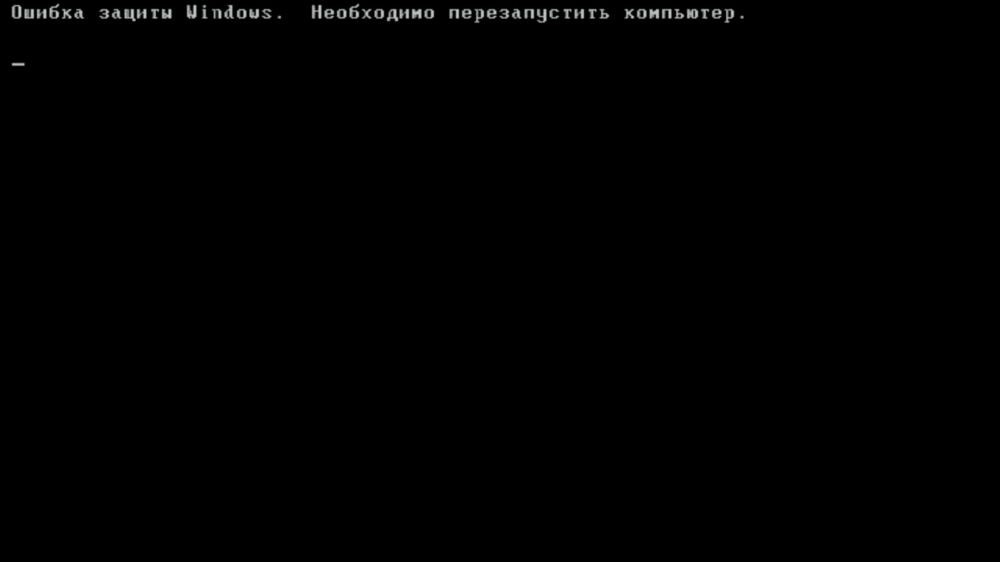
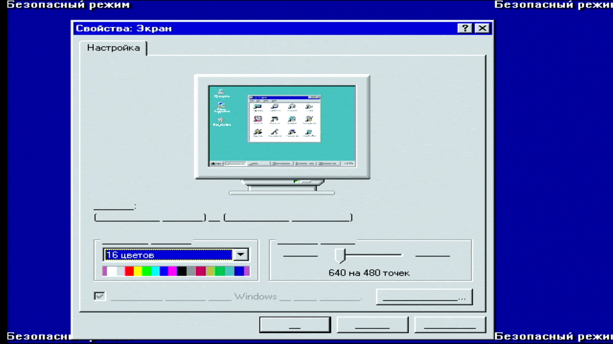
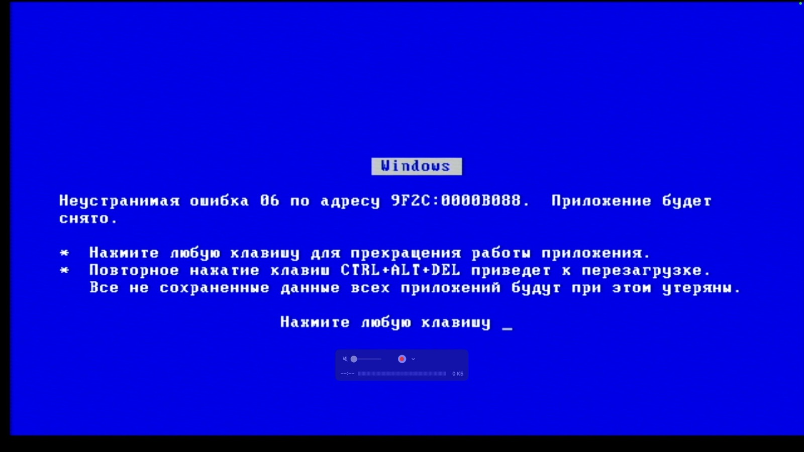
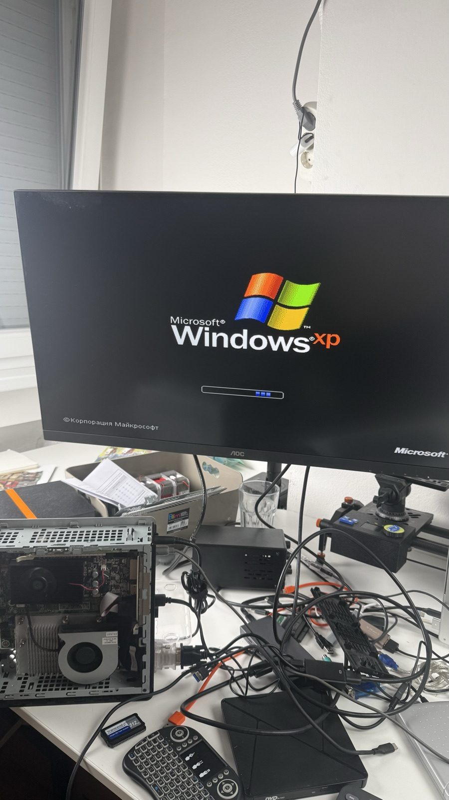
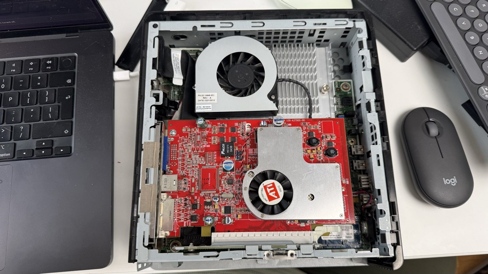
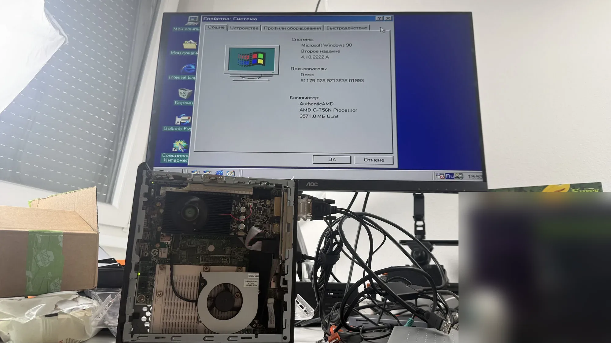

Давно у меня валялась машинка — тонкий клиент HP t610 Plus. Брал я её вообще как идею для подарка другу, но то не хватало комплектующих, то я материнскую плату угробил. Потом проект долго пылился — и в какой-то момент она мне самому понравилась. Так что осталась у меня как ретро-машинка.

| HP t610 Plus | |
|---|---|
| CPU | AMD G-T56N — 2 ядра, Bobcat, 1.65 ГГц |
| GPU | встроенная Radeon HD 6320 + GeForce GT 730 2 ГБ DDR3, 64 бит |
| RAM | 8 ГБ DDR3 |
| накопители | IDE DOM 2 ГБ, SATA DOM 16 ГБ, SSHD 500 ГБ |
| слот | 1× PCIe x16, полноразмерный, но карта только однослотовая |
| порты | COM, LPT, DVI (VGA получается пассивным переходником), PS/2, |
Чем она хороша для ретро: настоящий PCIe-слот, COM и LPT, PS/2 для мыши и клавиатуры, корпус компактный и приятный. Мощнее всех моих остальных ретро-машин, хотя сама по себе не очень мощная: процессор вроде двухъядерный, но такой себе. Да и ретро-машиной её назвать сложно: по сути это небольшой мини-ПК начала 2010-х — t610 вышел в 2011 году. Важное дополнение — дискретная видеокарта. Пусть GT 730 весьма посредственная, но это отдельная карта, и под XP и 7 у неё есть официальные драйверы. Задумка — Windows 98, XP и 7 на одной коробке, чтобы запускать игрушки и программки, которые на современном железе нормально не работают.
И вот каким-то вечером в сентябре мне захотелось с чем-нибудь попердолиться. План был простой: спокойно ставлю 98-ю на 2-гиговый DOM, потом так же спокойно XP на HDD. Как я ошибался.

IDE DOM, который не хотел грузиться
Начал с того, что отформатировал 2-гигабайтный DOM в FAT32 прямо на Mac. Результат:
Error loading operating system
Что не помогло:
FDISK /MBR
SYS C:
FORMAT C: /S
BIOS: трансляция Auto / LBA Assisted
Отключение всех остальных дисков тоже. Пробовал и маленький раздел в начале диска — дело было не в размере.
Сработало только FAT16 + MS-DOS 6.22 — тогда DOM загрузился сразу.
Кстати, эту ошибку пишет ещё не DOS, а загрузочный код MBR: раздел он нашёл, а прочитать его первый сектор через BIOS не смог.
IDE-разъём, который на самом деле не IDE
Ещё одна важная штука, которую я понял по ходу дела: 44-пиновый «IDE»-разъём на t610, скорее всего, вовсе не IDE, а SATA-порт с мостом SATA↔PATA. Прямого подтверждения этому, например конкретную микросхему моста, я не нашёл, но всё сходится:
- в BIOS DOM обозначен как SATA0;
- в системе вообще один контроллер дисков — SATA (lspci на parkytowers);
- в рабочей Windows 98 нет ни одного IDE-контроллера, а «IDE» DOM с системой обслуживает SATA AHCI-драйвер (об этом ниже);
- DOS-утилита
IDEINFOдиск на IDE-портах не видит, хотя компьютер с подачи BIOS успешно с него загружается.
Отсюда и все странности в DOS.
Немного матчасти: как DOS работает с диском
Своих драйверов диска у DOS нет. Всё чтение и запись она отдаёт BIOS через прерывание INT 13h: «дай мне сектор такой-то», а как общаться с контроллером, знает уже BIOS. Сектор при этом адресуется по CHS — цилиндр, головка, сектор, — и BIOS пересчитывает это в реальный адрес на диске. Если BIOS придумал диску одну геометрию, а загрузчик рассчитывает на другую, читается не тот сектор — отсюда и «Error loading operating system».
Медленно это потому, что каждый маленький кусок данных — это отдельный вызов, а процессор сидит и ждёт ответа. В нормальной ситуации Windows 98 после загрузки так не делает: она подгружает свой 32-битный драйвер (для IDE это esdi_506.pdr, у меня в итоге AHCI.PDR) и работает с контроллером напрямую. Если драйвер не встал, 98-я откатывается в режим совместимости с MS-DOS и снова ходит через BIOS — медленно и печально.
DOS-грабли
Сначала работать с DOM я решил с Mac через USB-переходник. Думал, быстренько прогоню установку или хотя бы её часть в виртуалке, а потом уже завершу всё настройкой на реальной машине. В очередной раз ошибался.

И сразу наступил на первые грабли: подключил DOM в QEMU как есть, чтобы разметить его и начать установку, — и QEMU испортил на нём таблицу разделов. После этого работал только с образом: снимаю копию DOM в файл, запускаю QEMU с ней, а потом записываю обратно на DOM.
diskutil list # номер диска каждый раз проверять заново
diskutil unmountDisk /dev/diskN
sudo dd if=/dev/rdiskN of=dom-backup.img bs=4m
shasum -a 256 dom-backup.img
Дальше:
- С загрузочной дискеты из комплекта 98-й установка не шла. Системные файлы с неё (включая подозрительно маленький
MSDOS.SYS) не грузились даже в QEMU, аsysиxcopyна ней просто не было. Тогда я сначала проверил установку DOS с дискет MS-DOS 6.22 — там всё прошло успешно. В итоге собрал свою загрузочную дискету — на DOS от полноценной Windows 98 SE (MS-DOS 7.1), с нужными утилитами:FDISK,FORMAT,SYS,XCOPY,SMARTDRV,SCANDISK,PATCH9X,AHCILDRи прочими. Она сама находит дистрибутив на дисках и запускает установку.

- USB-привод отваливался. В итоге дистрибутив я положил на второй диск — SATA DOM с FAT16-разделом WIN98XFER — и ставил оттуда. А обычный
copyвместоxcopyупирался в:
CDR101: Not ready reading drive D

- FDISK не на том диске. Пока было подключено несколько накопителей, нумерация в
FDISKгуляла, и однажды я долго и вдумчиво размечал 18-гигабайтный диск вместо DOM. Скорее всего, это был SSHD на 500 ГБ, которыйFDISKувидел как 18 ГБ. Вывод: при разметке — только один диск. FDISKпроверял диск больше часа. Дважды.Verifying drive integrityшёл со скоростью около 0,4 МБ/с: за час — 77%. DOM тут не виноват, это DOS читает его через BIOS мелкими кусками. А потомFDISKспросил «весь объём под основной раздел и сделать активным?», я сказал «да» — и он пошёл проверять заново. Ещё час.

- Фиксы наугад. Батники и советы от LLM, случайные фиксы из интернета — временами всё это приводило вот к такой картине:

А на последнем этапе установки текст в окне превратился в кракозябры — русский CP1251 рисовался восточноевропейским шрифтом CP1250, «Программы» выглядели как Ďđîăđáěěű. На установку не повлияло. В нормальном виде этот экран такой:

- Ключ продукта при вводе внезапно печатался в русской раскладке. Я долго думал, как с этим быть, и не понимал, как его вообще правильно вводить. Вроде бы раскладку переключают Ctrl+Alt+F1 — US, Ctrl+Alt+F2 — RU, но у меня это почему-то не работало. Скорее всего, дело в моих специфичных клавиатурах, на которых такие сочетания отрабатывают не совсем корректно. В итоге ключ я просто прописал в файл ответов.
Вообще, чтобы упростить и ускорить установку, я собрал под t610 свой комплект: файл ответов для Setup (MSBATCH.INF — с ним Setup идёт без вопросов) и набор заготовленных конфигов, а запускалось всё одним INSTALL.BAT. Оба файла выложил: INSTALL.BAT, MSBATCH.INF (ключ продукта заменён).
8 ГБ памяти
Файлы скопировались, DOS работает, а графика не стартует: «Недостаточно памяти для инициализации Windows» или вот так:

Windows 98 не рассчитана на 8 ГБ. Вынимать планки я не хотел, да и смысла в этом нет: планок DDR3 подходящего для 98-й объёма просто нет.
Для масштаба: по минимальным требованиям Windows 98 хватало 16 МБ памяти. В то время компьютер с 16 МБ памяти, а то и меньше, был вполне себе нормой. Новые в 1998–1999 годах продавали уже с 32–64 МБ, игровые — с 64–128 МБ, а к началу нового тысячелетия нормой для нового компьютера стали 128–256 МБ. Сама 98-я спокойно работает примерно до 512 МБ. Дальше начинает чудить кэш диска, а после ~1 ГБ система может вообще не стартовать — Microsoft это даже признавала официально. Теоретический предел для 32-битной системы — 4 ГБ адресного пространства, но 98-я упирается в проблемы гораздо раньше. А тут 8 ГБ — в 500 раз больше минимальных требований.
Что пробовал:
MaxPhysPage=20000иMaxFileCache=65536вSYSTEM.INI— частичный прогресс, но не решение;HIMEM.SYS /MAX=— неверный совет, у MS-DOS-ногоHIMEMтакого ключа просто нет;HIMEMXс/MAX=— DOS доволен, Windows всё равно висит. Ограничить память для DOS — не то же самое, что починить менеджер памяти Windows.
Помог PATCHMEM 7.2 от R. Loew (документация). Он патчит VMM.VXD и VCACHE.VXD. Проверил, что патч реально встал: внутри VMM.VXD появилась строка:
Windows 9X RAM Limitation Patch 7.2
После этого память перестала быть проблемой — и загрузка упала на следующем шаге.
Диск в защищённом режиме: esdi_506 и AHCI
Следующая остановка — BOOTLOG.TXT раз за разом заканчивался одной строкой:
Initing esdi_506.pdr
Это штатный драйвер IDE в Windows 98, и на t610 он вешает систему. Ещё раньше на поиске оборудования был зависон на USB-контроллере, второй проход его миновал.

Решение — AHCI-драйвер от того же R. Loew. Режим SATA в BIOS — AHCI, и в логе наконец:
Initing ahci.pdr
Init Success ahci.pdr
INITCOMPLETESUCCESS = AHCI
Драйвер я подкинул уже в установленную Windows: положил файлы на DOM в C:\DRV\AHCI и поставил оттуда через INF.
Какой драйвер искать
Выложить драйвер не могу — лицензия прямо запрещает распространение. Но вот всё, чтобы найти именно его:
- Windows 95/98/98SE/ME AHCI Driver 3.0, Rudolph R. Loew (RLoew), 27.07.2019. Ищется на форуме MSFN по
rloew AHCI driver,AHCI.PDR. - Драйвер цепляется к классу AHCI-контроллеров, так что подойдёт не только к t610.
- Ставил
AHCI4.INF— для 4 портов. - Встал правильно, если в Диспетчере устройств есть
Standard 4-Port PCI AHCI Controllerи под нимAHCI Port 0…3.
Контроллер t610: PCI\VEN_1002&DEV_4391&SUBSYS_17E2103C&REV_40
Класс в INF: PCI\CC_0106
AHCI.ZIP: AHCI.PDR, AHCI4.INF, AHCI6.INF, AHCILDR.COM, AHCIMAP.COM
AHCI.ZIP MD5 0340dcbe415e97e28aa1b090c50463bc
AHCI.PDR 24 912 байт, MD5 0f7ff4b3aeff131ff3e292184a68fca7
Лог с удачной загрузкой: bootlog-ahci-ok.txt
Видео
Следующий барьер:
Starting Стандартный видеоадаптер PCI (VGA) (PCI\VEN_1002&DEV_9806...)
VDD: Cant start theVGA, after init complete.
Дальше Windows не шла, жил только безопасный режим в 640×480 и 16 цветах.

По дороге ещё словил синий экран с неустранимой ошибкой 06:

А лечилось всё одной строкой в C:\WINDOWS\SYSTEM.INI:
; было
display.drv=pnpdrvr.drv
; стало
display.drv=vga.drv
Бэкап DOM после первой удачной загрузки отличается от неудачного ровно этой строкой. Лог: bootlog-vdd-cant-start-vga.txt, рабочий SYSTEM.INI.
Для встроенной Radeon HD 6320 драйвера под 98 нет. И не может быть: последние драйверы Radeon с поддержкой Windows 98 выходили ещё в те времена, когда Radeon делала ATI, а не AMD. Высокие разрешения и цвет дал универсальный VBEMP через VESA — вариант «VBE Miniport (ATI/AMD)». Аппаратного ускорения с ним нет.
VBEMP — универсальный видеодрайвер для Windows 9x. Про конкретную видеокарту он ничего не знает и работает через VESA BIOS Extensions — стандартный интерфейс видео-BIOS, который есть почти у любой карты. Драйвер просит видео-BIOS включить нужный режим, а дальше просто рисует в кадровый буфер: разрешение и цвет есть, ускорения нет. Для железа, под которое родных драйверов под 98 не существует, это часто единственный вариант.
GT 730 и X700
GT 730 я ставил в надежде на меньшее количество проблем: всё-таки полноценная внешняя видеокарта, без приколов с чипсетом и процессором. Сначала картинка всё равно шла со встроенной Radeon, а на выходах GT 730 было пусто — переключателя основной видеокарты в BIOS я не нашёл. Изображение на GT 730 появилось только после установки VBEMP, и только на DVI: POST и BIOS на ней по-прежнему не видно, а на HDMI так ничего и не появилось. Нативного драйвера под 98 у GT 730 нет.
Логичный ход — взять карту той эпохи с родным драйвером под 98. Я купил ATI Radeon X700 PRO на 256 МБ GDDR3: драйвер встал и работает, но глубоко её пока не гонял — игры и 3D ещё впереди.

Казус с мышью
В какой-то момент после установки мышь стала работать отвратительно: курсор то дёргался, то прыгал, прицелиться во что-то точно было невозможно. Перепробовал всё, что было под рукой:

В итоге всё нормально заработало после того, как компьютер постоял ночь. Причину так и не нашёл.
Что так и не завелось в 98-й
- Звук. Встроенный HD Audio в 98 не поддерживается. SBEMU даёт звук только в чистом DOS. Пробовал и Covox — это простейший ЦАП из горстки резисторов, родом из конца 80-х. У меня он самопаяный и целиком помещается в разъёме для LPT-порта. Звук включения Windows 98 через него на колонках проиграл, но дальше заставить его работать для мультимедиа мне не удалось: Media Player пишет «не найдено подходящего устройства».
- Сеть. Сначала решил, что карта Realtek, и запустил DOS-драйвер
RTLPKT— получил MAC из нулей. По PCI ID она оказалась Broadcom BCM57781 (14E4:16B1). Вывод: сначала ID, потом драйвер. - Wi-Fi. USB-свисток MT7601U (
148F:7601) 98-я видит, но драйвера под неё нет.
Windows XP
После 98-й XP — почти отдых. Тоже не всё просто, но гораздо проще и спокойнее.
Диск в AHCI и F6, на которую никто не реагирует
Проблема та же, что у 98-й: SATA-контроллер работает в режиме AHCI, а в XP своего драйвера AHCI нет, и установщик диск просто не видит. Драйвер надо подсунуть.
Классический способ — нажать F6 в начале установки и дать драйвер с дискеты. Моя XP на F6 не реагировала. Зато когда установщик говорил, что дисков не найдено, можно было указать драйвер вручную: выбрать дискету, выбрать драйвер — и диск появлялся. Делалось это в менюшках, которые я, кажется, первый раз в жизни видел, но сфоткать их не догадался.
Ставил с внешнего USB-флоппи, и это были те ещё танцы: дискету иногда приходилось вынимать и вставлять заново, пока установщик её не подхватывал. А драйвер установщик спрашивал дважды: после разметки и копирования файлов он зачем-то просил его снова, и в этот момент USB-флоппи уже не видел.
Правильное решение — интегрировать драйвер в дистрибутив, например через nLite, и нарезать новый диск. Внешний USB-CD-ROM, кстати, установщик видит, если воткнуть его в порт USB 2.0. Но перенарезать болванку не хотелось, да и компьютера с Windows, на котором можно было бы спокойно запустить nLite, под рукой не было. Наверняка это можно сделать и консольными инструментами под Linux или Mac, но пердолинга мне хватило и с 98-й.
GRUB4DOS и XP из оперативной памяти
Вместо этого я вспомнил старый трюк. В начале 2010-х я понемногу чинил компьютеры знакомым знакомых. Тогда уже набирала популярность Windows 7, но на слабые машины, а иногда просто по желанию, ставили XP. Таскать с собой диски не хотелось, да и CD-ROM был уже не везде. Поэтому у меня была универсальная флешка, и XP с неё я ставил через GRUB4DOS.
GRUB4DOS — загрузчик, выросший из старого GRUB. Главное его умение — эмулировать диски: он может взять файл-образ дискеты или ISO, загрузить его целиком в оперативную память и подсунуть BIOS как настоящий дисковод или CD-ROM. Всё, что загружается дальше и читает диск через BIOS, разницы не замечает.
Но тут есть подвох, знакомый по главе про DOS: XP через BIOS работает только в самом начале установки. Как только загружается её собственное ядро со своими драйверами дисков, BIOS-эмуляция для неё пропадает — и виртуальный CD вместе с ней. Для этого нужен FiraDisk — драйвер виртуальных дисков для Windows 2000/XP/2003. Он находит в памяти образы, которые оставил GRUB4DOS, и показывает их Windows как обычные диски, уже без BIOS.
Суть способа: GRUB4DOS загружает ISO с XP в оперативную память и подключает рядом виртуальную дискету с драйвером FiraDisk. Установщик XP грузится из виртуального CD, ставит с дискеты FiraDisk и дальше уже не теряет образ, в том числе после перезагрузок. Ни CD-ROM, ни nLite не нужны.
Здесь я просто положил драйвер AHCI на ту же виртуальную дискету. Она делает сразу две вещи: держит XP в памяти и работает как F6-дискета, которая никуда не пропадает между перезагрузками. И, в отличие от USB-флоппи, она точно не отвалится.
На флешке четыре файла: grldr, menu.lst, XP.iso и firadisk.IMA. Порядок такой:
- Первая загрузка — пункт меню с текстовой фазой установки: разметка, форматирование, копирование файлов.
- После каждой перезагрузки, пока не появится рабочий стол, — пункт с графической фазой. Он заново подключает ISO и дискету и грузит недоустановленную XP с диска.
- Дальше — обычная загрузка с диска.
Мои файлы: menu.lst, txtsetup.oem — описание драйверов на дискете для установщика.

Какой драйвер AHCI искать
- AMD AHCI Compatible RAID Controller, файлы
ahcix86.sys,ahcix86.inf,ahcix86.cat, версия 3.3.0250.41 от 27.12.2012. - Лежит в пакете драйверов чипсета AMD
AllIn1 8.86RC2(папкаPackages\Drivers\SBDrv\hseries\RAID\XP). Ищется по имени файлаahcix86.sysи по ID контроллера.
Контроллер t610: PCI\VEN_1002&DEV_4391&SUBSYS_17E2103C&REV_40
В txtsetup.oem: PCI\VEN_1002&DEV_4391&CC_0106
Драйверы
Заработало в итоге всё: сеть, звук, встроенная видеокарта, GT 730. Под XP драйверы на это железо ещё существуют, их только нужно поискать. И некоторые производители упорно сопротивляются тому, чтобы их скачали: подходящих драйверов на сайтах было много, но там то просят ввести серийный номер, то прячут файлы ещё куда-нибудь. Не знаю, за нагрузку на свои серверы они так переживают или за что.
Отдельно про GT 730: под этим названием NVIDIA выпускала карты на разных архитектурах — Fermi (GF108) и Kepler (GK208), и драйверы под них разные. Мне досталась худшая версия — Kepler GK208 с 64-битной шиной и DDR3, — и драйвер под неё тоже худший из двух.
Интересный нюанс: когда я поставил драйвер для X700, отвалился драйвер встроенной видеокарты. Видимо, старый драйвер ATI и более новый AMD конфликтуют, где-то пересекаясь по ID. Подробно пока не разбирался: после установки X700 в машине не ковырялся.

Выбор системы при загрузке
А вот загрузку 98 + XP я так и не починил. Каждая система стоит на своём диске, и нужный диск я каждый раз выбираю в BIOS. Я ожидал, что XP сама подтянет 98-ю в своё меню загрузки, но нет — видимо, как раз потому, что та на другом диске. В планах — нормальное меню выбора системы.
Итог

Windows 98 на t610 работает: FAT16 на DOM, PATCHMEM для 8 ГБ, AHCI.PDR вместо esdi_506, vga.drv → VBEMP, и X700 в слоте. Без звука и без сети, зато USB в 98 SE работает прекрасно. XP рядом работает полностью, со всеми драйверами.
Что вынес:
- Win98 на t610 — это борьба с железом. Если нужны просто игры 1998–2006, проще XP. 98-я тут ради процесса.
- Проблемы идут цепочкой: загрузка → память → диск → видео → мышь. Починил одну — упёрся в следующую.
BOOTLOG.TXTпоказывает, где ты сейчас. - С дисками — только через образы и с контрольной суммой.
- При разметке подключен один диск.
- Сначала PCI ID, потом драйвер.
- Под 98 лучше брать видеокарту той эпохи, чем мучить современную через VESA.
- Старые трюки не пропадают: флешка с GRUB4DOS из начала 2010-х выручила и сейчас.
Комментарии